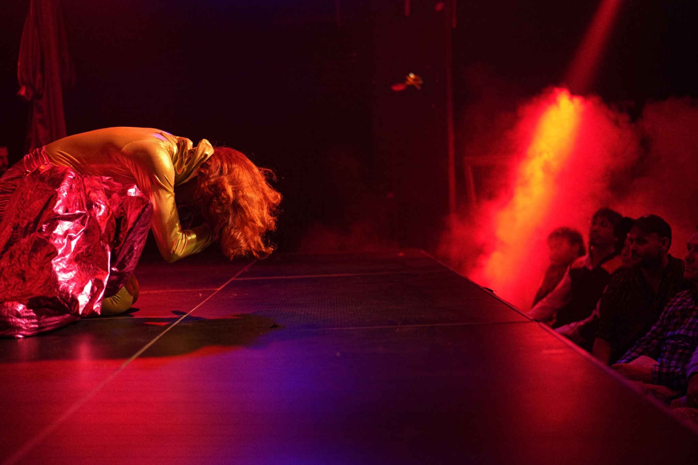

what's on

thu 12 oct 2023
desire marea
[south africa]
thu 19 0ct 2023
pumpitopera transatlantica
[brazil]
“transform has changed the way audiences experience leeds”
the guardian
what's new
one month to go — With one month to go until Transform 23, we're today announcing a series of new commissions, DJ sets and immersive encounters to deepen your experience of the festival.

if walls could talk — Opening the festival alongside Àsrún Magnúsdóttir's secrets , Transform's Young Curators present if walls could talk.
opportunities
sottobosco: workshop call out
volunteer call out
join the distorded rap choir